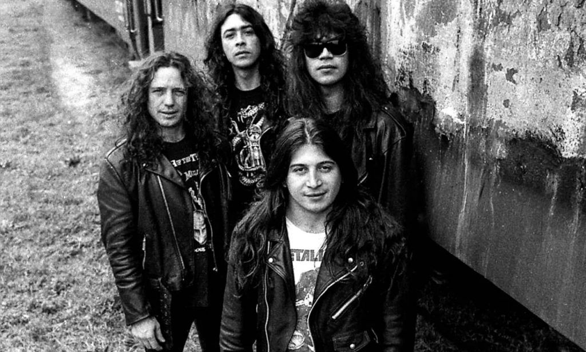
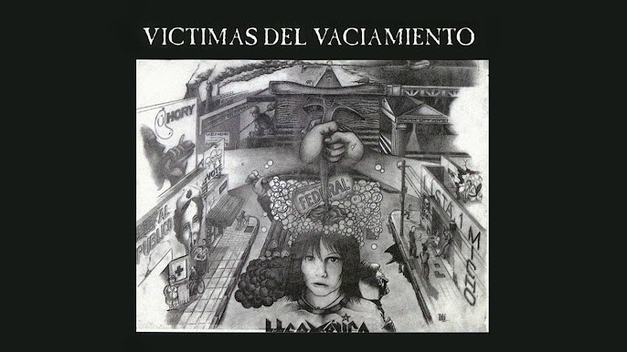

Biografía
Integrantes: Claudio O'connor Antonio Romano Ricardo Iorio Claudio Strunz (De izq. a derecha)

Discografía
Hermetica (1989)
Canciones:
- Craneo candente
- Masa anestesiada
- Desterrando a los oscurantistas
- Victimas del vaciamiento
- Tu eres su seguridad
- Sepulcro civil
- Vida impersonal
- Desde el oeste
- Para que no caigas
- Deja de robar
- Yo no lo haré
probando si se puede poner un enlace a un icono/imagen:
Escuchar en:
pd: si se pudo burro
Acido Argentino (1991)

Canciones:
- Robó un auto
- La revancha de América
- Memoria de siglos
- Predicción
- Atravesando todo límite
- Horizonte perdido
- Vientos de poder
- Del camionero
- Gil trabajador
- Evitando el ablande
- En las calles de Liniers
- De Pismanta a Bauchaceta
Escuchar en:
Victimas del Vaciamiento (1994)

Canciones:
- Soy de la esquina
- Otro día para ser
- Traición
- Olvidalo y volverá por más
- Hospitalarias realidades
- Buscando razón
- Cuando duerme la ciudad
- Ayer deseo, hoy realidad
- Del colimba
- Moraleja
- Tano solo (instrumental)
Escuchar en:
Yapa
Como olvidar cuando fueron a tocar al penal de olmos
Iframe de youtube:
Insert de Tiktok que no se por que se va al centro de la pantalla:
@fmrockandpop959 🤘Hermética en la cárcel de Olmos hace 30 años. 🎸El 17 de agosto de 1993, Hermética junto a otras bandas del heavy metal argentino se presentaron en el primer festival de rock carcelario de nuestro país. 🏫La temática era que solo los presos que tenían buena conducta, pudieran disfrutar de un concierto de rock en el patio del penal. 💽El hecho histórico quedó registrado en un disco en vivo, titulado finalmente como Radio Olmos. #fmRockAndPop #NosGustaElRock ♬ sonido original - Rock & Pop
¿Que carajo hacían tocando en un penal?
Olmos y la odisea del primer recital de la historia del rock nacional en una cárcel, fue el 17 de agosto 1993, organizado por Alejandro Taranto y Norberto Verea a beneficio de la emisora que funcionaba dentro del penal de Olmos.
Bandas participantes: Hermética, Logos, Lethal, Massacre, Pilsen, Attaque 77, A.N.I.M.A.L. y la banda inglesa de punk U.K. Subs.
El público consistió de 700 internos, efectivos del servicio penitenciario Bonaerense y periodistas acreditados para la ocasión.
Como legado de éste concierto quedó un album en vivo titulado "Radio Olmos" y un documental de dos horas que puede encontrarse en youtube (adjunto abajo), siendo considerado así un evento histórico en la escena del rock argentino de los años 90.
Fuentes: Wikipedia, Nota de 0221
- Me convenciste papu quiero escuchar otro temon
- Opcion 2 en negrita pa usar el "/b"
- La mejor opcion
- Opcion 4 (me da fiaca borrarla)
Posdata de la yapa: QEPD Ricardo Iorio
Justo que te vas - Ricardo Iorio
Ricardo Horacio Iorio había nacido en Ciudadela, en la provincia de Buenos Aires, el 25 de junio de 1962. Su carrera como cantante y compositor es muy extensa. Fue uno de los impulsores del metal argentino y fundador de bandas icónicas como V8, Hermética y Almafuerte. Luego, lanzó su carrera como solista. En sus ultimos años se encontraba recorriendo el país.
El ícono del Heavy Metal fallece un martes de octubre de 2023, a los 61 años. Estaba en su casa ubicada en una zona rural de Coronel Suárez cuando habría sufrido un infarto.

Otro insert de TikTok porque no se que mas hacer
@renegadoradiooficial Ricardo Iorio falleció ayer cuando estaba en camino al Hospital de Coronel Suárez, luego de sentir un dolor en el pecho. El músico de heavy metal y exlíder del grupo Almafuerte tenía 61 años. El cantante llegó a la institución de salud, pero no pudieron reanimarlo y se confirmó su deceso ayer martes a la mañana. “Me dijo la mujer que empezó a sentirse mal en la casa, que le dolía muy fuerte el pecho. Entonces se acostó hasta que llegó la ambulancia. Al parecer, murió en el trayecto, porque cuando llegó al hospital le dijeron que ya había fallecido”, relató un allegado, quien confirmó el fallecimiento a través de la mujer del cantante. Iorio había fundado las bandas V8, Hermética y Almafuerte y en los últimos días se encontraba realizando una gira nacional. El músico es el máximo exponente del heavy metal argentino. Fue bajista, compositor y cantante, y en las tres bandas icónicas que integró sentó un precedente de este estilo musical. Las letras de Iorio siempre rondaron las críticas al sistema establecido y la marginalidad, con foco en crónicas sociales. Además, desde el estilo metalero criticaba al rock de los años 70 por considerarlo pasivo y no hacerle frente al establishment. Iorio se destacó por sus letras, que contenían una postura marcada ante determinados temas y estaban embebidas de conciencia de clase. Además, introdujo en el heavy metal otros géneros como el folklore y el tango. Sin embargo, el cantante también supo mostrar un costado más polémico con declaraciones antisemitas, homofóbicas y discriminatorias, que, incluso, lo llevaron a tener que dar explicaciones ante el Inadi. La noticia de la muerte de Ricardo Iorio generó conmoción entre sus seguidores, y cientos de expresiones en redes sociales, con mensajes alusivos a su música o frases de las canciones más destacadas de su trayectoria. 🖤 PD: Estos fragmentos fueron extraídos de la entrevista realizada hace exactamente un año, de 108 minutos de duración, por el periodista Eduardo Prestofelippo, más conocido como "El Presto". Dicho video completo se puede encontrar en su canal de YouTube, del mismo nombre "El Presto". 👏🏼 Más música, videos e historias en nuestros canales de Instagram y YouTube. Los enlaces a dichos canales se encuentran en nuestra BIO. #radiorenegado #renegadoradio #ricardoiorio #almafuerte #ricardoioriomuere #heavymetal #metalpesado #elpresto #heavy #metal #iorio ♬ sonido original - Renegado Radio